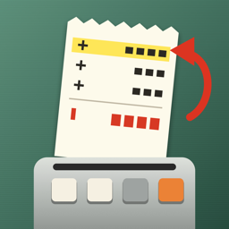

さかのぼる紙テープ電卓
上の行を直すと、下が全部計算し直される紙テープの電卓。
打った計算が、紙テープ（レジのロール紙）に1行ずつ残る電卓です。あとから上の行の数や「＋−×÷」を直すと、その下の行が全部計算し直されます。
- さかのぼって直す：行をたたいて数・記号・メモを直すと、下の答えが全部変わります。変わった行には黄色の印が付き、「合計 1,580 → 2,120」のように前と後が出ます
- 税込10%・税込8%（長く押すと税抜）、小計・合計、8%と10%の合計を足す「総計」、％
- 行に「卵」「ガソリン」などのメモを付け、テープに名前を付けて棚にしまえます。文字にして送ることもできます
- 消すのは1行ずつ。「取消」で消した行の数は打つところにもどります。テープを丸ごと捨てる前には必ず聞きます
- 登録・課金はありません。計算は端末の中だけにしまいます。画面のいちばん下に小さな広告が出ます